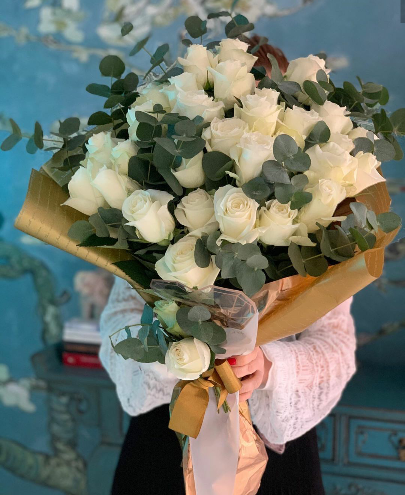
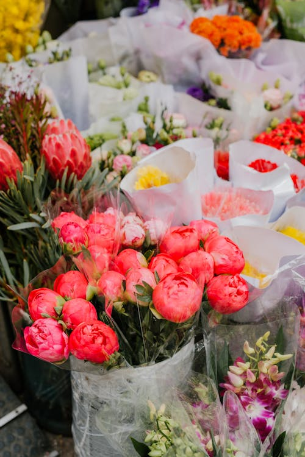

Care
-
Полив
регулярно, особливо в спеку, але не перезволожувати. Краще рідко, але рясно (1–2 рази на тиждень). -
Обрізка
навесні (видаляють сухі та слабкі пагони) та після цвітіння (обрізають відцвілі квіти). -
Підживлення
з весни до середини літа комплексними добривами (азот, фосфор, калій). -
Мульчування
зберігає вологу, зменшує ріст бур’янів. -
Захист від шкідників/хвороб
оглядай регулярно, обприскуй при потребі спеціальними засобами.! -
Укриття на зиму
у холодних регіонах троянди вкривають агроволокном або присипають землею.
Composition
Коли створюєш композицію з троянд, важливо враховувати:
червоні – символ кохання🌹, білі – чистоти🌼, рожеві – ніжності🌺
Звичайні червоні троянди
підійдуть на кожен день

Листя евкаліпта чи аспарагуса
виглядає дуже свіжо та чисто

Стрічки та мереживо
виглядають цікаво та незвично